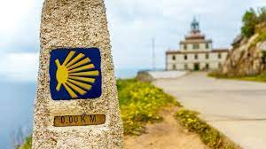

<!DOCTYPE html>
<html lang="es">
   <head>
    <meta charset="UTF-8">
    <title>objetos programa Camino de Santiago</title>
    </head>
    <body>
      <script defer>
        function Etapa (numeroEtapa, kmInicial, kmFinal, descripcion) {
            this.numeroEtapa = numeroEtapa;
            this.kmInicial = kmInicial;
			this.kmFinal = kmFinal;
			this.longitud = this.kmFinal-this.kmInicial;
			this.realizada = false;
			this.descripcion = descripcion;
        }
        function Camino () {
            this.etapas = [];
			this.add_etapa = function (numeroEtapa, kmInicial, kmFinal, descripcion) {
			  this.etapas.push(new Etapa(numeroEtapa, kmInicial, kmFinal, descripcion));
			}
			this.realizar_etapa = function (numeroEtapa) {
			  for (let i = 0; i < this.etapas.length;i++) {
			    if (numeroEtapa === this.etapas[i].numeroEtapa) this.etapas[i].realizada = true;
			  }
			}
			this.imprimir_etapas = function () {
			  let kmRealizados = 0;
			  let kmPorRealizar = 0;
			  let etapasRealizadas = 0;
			  let etapasPendientes = 0;
			  let resultado = "<table border='1' width='300px'>";
			  for (let i = 0; i < this.etapas.length;i++) {
			     if (this.etapas[i].realizada) {
				   kmRealizados += this.etapas[i].longitud;
				   etapasRealizadas++;
				   resultado += "<tr><th colspan='2'>Etapa " + this.etapas[i].descripcion + "</th></tr>";
				   resultado += "<tr><td>Km Inicial</td><td>" + this.etapas[i].kmInicial + "</td></tr>";
				   resultado += "<tr><td>Km Final</td><td>" + this.etapas[i].kmFinal+ "</td></tr>";
				   resultado += "<tr><td>Distancia</td><td>" + this.etapas[i].longitud + "</td></tr>";
				 } else {
				   kmPorRealizar += this.etapas[i].longitud;
				   etapasPendientes++;
				 }
			  }
			  resultado += "</table>"
			  document.write(resultado);
			  document.write("");
			  document.write ("<table border='1' width='200px'><tr><th>Etapas realizadas</th><th>" + etapasRealizadas + "</th></tr><tr><td>Km realizados </td><td>" + kmRealizados + "</td></tr></table>");
			  document.write("<table border='1' width='200px'><tr><th>Etapas a realizar</th><th>" + etapasPendientes + "</th></tr><tr><td>Km a realizar </td><td>" + kmPorRealizar + "</td></tr></table>");
			}
		 }
         var jacobeo = new Camino();
		 jacobeo.add_etapa(1,0,43,"Roncesvalles-Navarra");
		 jacobeo.add_etapa(2,43,69,"Navarra-Montelarreina");
         jacobeo.add_etapa (3,69,108,"Montelarreina-Burgos");
		 jacobeo.add_etapa (4,108,129,"Burgos-Hornillos del Camino");
         jacobeo.realizar_etapa(1); 		
		 jacobeo.realizar_etapa(2);
		 jacobeo.realizar_etapa(3);
         jacobeo.imprimir_etapas();		       
      </script>
  </body>
</html>
